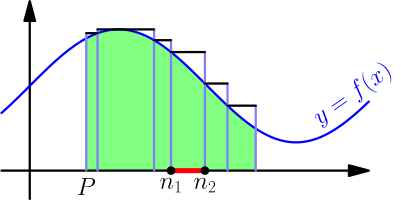
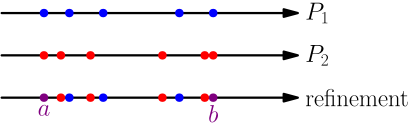

Refinement of Partition¶
On this page, $[a,b]$ is an interval, and $f$ is a function that has minimum and maximum values on $[a,b]$ and all closed subintervals of $[a,b]$. So, if $[a,b] = [1,4]$, it's not enough that $f$ has a minimum and a maximum on $[1,4]$; it also has to have a minimum and a maximum on e.g. $[2,3]$. We will need these minimums and maximums for calculations.
Let $P$ be a partition of $[a,b]$. A refinement of $P$ means another partition of $[a,b]$ that contains all numbers of $P$.
Note that any partition is a refinement of itself because it contains all partition numbers of itself.
Upper and lower sums with refinements¶
Suppose that $R$ is a refinement of $P$ that contains one number more than $P$. Below $r$ is the number in $R$ but not in $P$, and $n_1$ and $n_2$ are its "neighbor" partition numbers. The upper sums of a function $f$ with these partitions look like this:

The upper sum with $R$ is less than the upper sum with $P$ because the rectangle between $r$ and $n_2$ is lower than before. That's because the maximum value of $f$ on $[n_1,n_2]$ came from $[n_1,r]$, and not from $[r,n_2]$; all values of $f$ on $[r,n_2]$ are less than the maximum on $[n_1,n_2]$.
In general, this explains why the upper sum can't increase when adding a number to the partition, but the upper sum doesn't necessarily decrease. For example, if the graph of $f$ is a horizontal line, then all upper sums are equal, and adding partition numbers doesn't change them.
A similar reasoning shows that lower sums increase or stay the same when adding a partition number.
Let $P$ be a partition of $[a,b]$ and let $R$ be its refinement that has only one more number than $P$. Then $$ \text{upper sum of $f$ with $P$} \ge \text{upper sum of $f$ with $R$} $$ and $$ \text{lower sum of $f$ with $P$} \le \text{lower sum of $f$ with $R$}. $$
By adding "new" partition numbers one by one, we see that this also works when the refinement contains multiple partition numbers that are not in $P$. Because we're writing $\ge$ and $\le$, it also works with how any partition is a refinement of itself.
Let $P$ be a partition of $[a,b]$. Then $$ \text{upper sum of $f$ with $P$} \ge \text{upper sum of $f$ with any refinement of $P$} $$ and $$ \text{lower sum of $f$ with $P$} \le \text{lower sum of $f$ with any refinement of $P$}. $$
Upper and lower sums of different partitions¶
If we take any two partitions of $[a,b]$, say $P_1$ and $P_2$, then we can combine their numbers to make a partition that is a refinement of both partitions.

Now we get $$ \begin{align} \text{lower sum of $f$ with $P_1$} &\le \text{lower sum of $f$ with refinement} \\ &\le \text{upper sum of $f$ with refinement} \\ &\le \text{upper sum of $f$ with $P_2$}. \end{align} $$
For any upper and lower sums of $f$ on $[a,b]$, we have $$ \text{lower sum} \le \text{upper sum}, $$ even if the upper and lower sums are from different partitions.